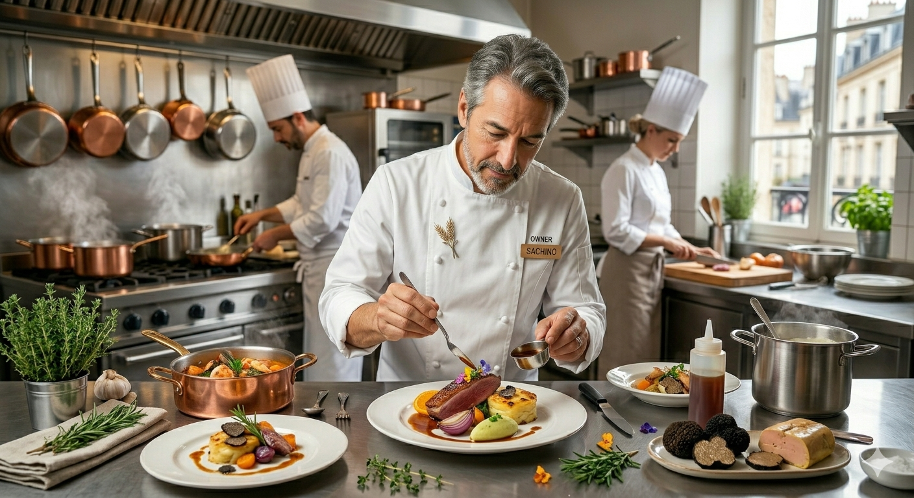
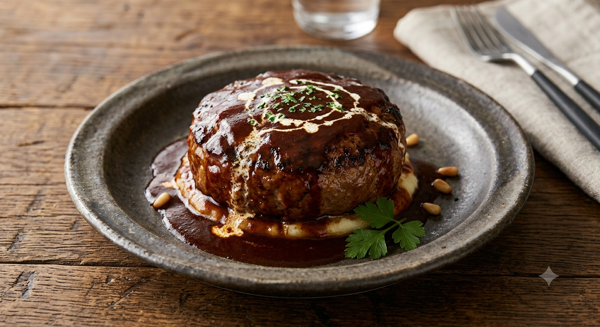
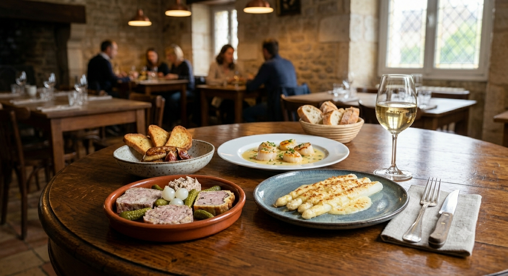

小さな森のレストラン ポパイ
LP特典
季節の小鉢を
一品サービス
次から次へとお客さまが訪れる人気店のため、
事前のご確認をおすすめいたします。
定休日：月曜日 | 4月〜12月営業

便利な場所ではありません。それでも、窓の向こうに広がる日高山脈の稜線と、手間暇かけて煮込んだソースの香りが、ここにはあります。
「また来ます」というその一言のために、今日も私たちは、小さな森の中で皆さまをお待ちしております。

肉の旨味を最大限に引き出した、ポパイの看板メニュー。ボリューム満点ながら、重くない。その絶妙なバランスがリピーターを呼びます。

季節の炊き込みご飯や一品が並ぶ、身体が喜ぶランチ。地元の旬を一番美味しい形で。毎月変わる楽しさが、旅の目的地になります。
ポパイの味と空間をもっと楽しんでいただくために。
現在、心を込めて準備を進めている新しい取り組みをご紹介いたします。
名物ハンバーグサンドと季節の小鉢、温かいハーブティーをバスケットに詰めて。お店の目の前に広がる大自然の好きな場所で楽しめるテイクアウトランチです。
「遠方でもポパイの味が食べたい」という声にお応えして。じっくり煮込んだ特製デミグラスソースと手ごねハンバーグの冷凍真空パックを全国へお届けします。
★★★★★
「失礼だけどビックリした、すごく美味しい。定食は白飯、メイン、味噌汁、漬物、野菜3種。控えめに言って最高でした。」
— トンカツ定食を召し上がったお客様
★★★★★
「日高山脈を望む落ち着いた空間。解放感のある風景がリラックス効果を生み、家族で経営されている雰囲気を料理にも感じられました。」
— 景色とランチを楽しまれたお客様